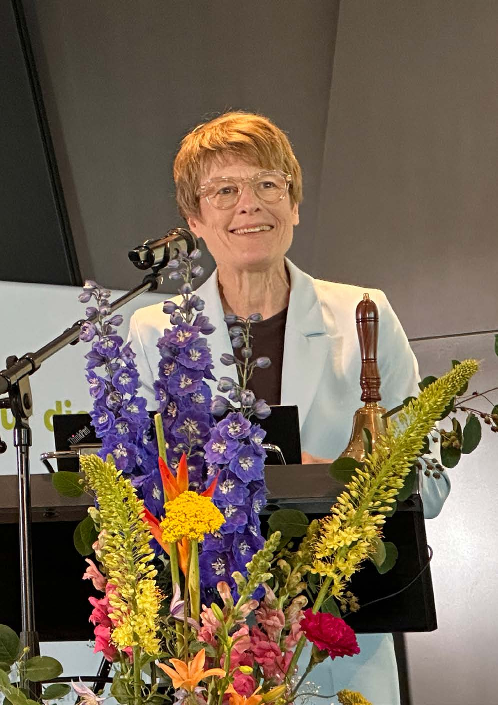

Fachbeiträge und Standpunkte
Kein Interview, kein Kommentar, sondern ein durchdachter Beitrag aus einer Disziplin. Fachleute nehmen sich eine Frage vor, die unsere Gespräche aufwerfen, und denken sie aus ihrem eigenen Blickwinkel zu Ende. Frei lesbar.
Vertrauensrepublik Deutschland
Impulse für eine Demokratie, die wieder begeistert: warum Vertrauen die eigentliche Währung des Staates ist.
Fachkräftemangel beginnt im Kinderzimmer
Warum der Fachkräftemangel im Kinderzimmer beginnt: ein Blick auf Familie, Bildung und die Wurzeln des Problems.

Freiheit, Widerspruch und offene Debatte
Ein Blick von den Hayek-Tagen 2026: über Freiheit, Widerspruch und den Wert der offenen Debatte.
Fachkräfte, Migration und die Zukunft der Gesellschaft
Warum Fachkräftesicherung, Integration und Zusammenhalt zusammen gedacht werden müssen: ein Plädoyer für eine pragmatische Einwanderungspolitik.
Polarisierung – und die Kunst, einander wieder zuzuhören
Über Polarisierung und die Kunst, einander wieder zuzuhören.
Das Schweigen der Bürgerlichen – unsere lauteste Kapitulation
Eine Rezension über das Schweigen der Bürgerlichen und die laute Kapitulation der Vernunft.
Orientierung im Überfluss
Orientierung im Überfluss: über einen wachsenden Buchmarkt zwischen Hype und Urteilskraft.
Der Generationenvertrag – veraltet oder falsch betrachtet?
Der Generationenvertrag auf dem Prüfstand: veraltet oder nur falsch betrachtet?
Die kleinen Geschenke der Politik
Über die kleinen Geschenke der Politik und die Logik, die Bürger und Wirtschaft abhängig macht.
Die schleichende Verstaatlichung unseres Lebens
Wurde die Bürokratie zu einem Koordinationsprinzip mit autoritären Zügen? Dr. Michael von Prollius seziert scharf den schleichenden Machtzuwachs des.
„Die Ära Milei – Argentiniens neuer Weg“
Bagus’ Buch Die Ära Milei - Argentiniens neuer Weg porträtiert Mileis Weg zur Präsidentschaft und erläutert wirtschaftsliberale Ideen verständlich.
Mogelpackungen im Gesundheitswesen
Die Pflegeexpertin Andrea Würtz bringt das ans Licht der Öffentlichkeit, was womöglich manche Leute lieber im Verborgenen halten möchten. So hat sie.
Lernfreiheit. Konturen einer krassen Fehlinterpretation
Was bedeutet eigentlich „Lernfreiheit“ – und wer darf sich auf sie berufen? Zwei Professorinnen decken auf, wie ein missverstandener Begriff zum.
Atomkrieg durch Algorithmen?
Die Stationierung US-amerikanischer Mittelstreckenraketen in Deutschland ab 2026 könnte Europa erneut zur Abschussrampe und Zielscheibe eines.
Eurasien denken, ohne Komplexe
Was trennt Europa und Asien wirklich – und was verbindet? Uwe Leuschner hinterfragt westliche Gewissheiten, östliche Realitäten und sucht Wege zu.
Biodiversität stärken, Wälder retten
Benjamin Schwegler ist Chief Representative der Stuttgarter Fairventures Digital GmbH in Indonesien. Fabian Schmidt-Pramov ist Co-Founder der.
Ruanda: Wenn Schüler zu Bildungshelfern werden
Um die Schulbildung anderer Kinder zu gewährleisten, spenden 25 Jugendliche der ruandischen Organisation „Save the future society“ ihr Taschengeld.
Dunkelflaute
Wie sich ein Blackout im Geistigen abzeichnet: eine pointierte Analyse der Energiepolitik zwischen politischer Naivität und historischem Vergessen.

Wirtschaftliche Anforderungen
Warum Wirtschaftlichkeit für die Daseinsvorsorge mit Energie zentral ist, und ein Sofortprogramm gegen die Abwärtsspirale der deutschen Wirtschaft.
Quo vadis Energiewende?
Ein Physiker und ehemaliger Kerntechnik-Manager über die Energiewende: was „erneuerbar" wirklich heißt und ein Zehn-Punkte-Sofortprogramm für die Stromerzeugung.
Wege aus der Wendekrise
Vier Experten der Energiewirtschaft analysieren den Stand der Energiewende und sprechen konkrete Kurskorrekturen als Empfehlung aus.
Ist die deutsche Energietransformation auf dem richtigen Kurs?
Ein Blick auf Effektivität und Effizienz des Jahrhundertvorhabens Energiewende: Ziele, Kosten, Versorgungssicherheit und die Rolle von Markt und Staat.
Gefangen im System
Warum die Energiewende mehr Kooperation braucht: eine Reihe von Dilemmata und ein Plädoyer für vernetztes Denken statt toxischer Polarisierung.
Energiebilanzen darf man nicht ignorieren
Zahlen, Daten und Fakten zur Energiewende: Gesamtenergie, Strom und Dekarbonisierung, weltweit und für Deutschland, mit Datentabellen und Grafiken.

Was ist Konservatismus?
Eine nüchterne Begriffsklärung: was Konservatismus eigentlich meint, jenseits der Tagespolitik.

Woran es krankt: Eine Hausärztin gibt Einblicke
Eine Hausärztin über den Alltag in der medizinischen Grundversorgung und das, woran das System krankt.

Datenschutz oder Chaos?
Die elektronische Patientenakte und die Sicherheit der Patientendaten: Wie sicher ist die ePA wirklich?
Digitalisierung: Warum Menschen auf der Strecke bleiben
Wenn die Technik schneller läuft, als die Menschen mitkommen: über die Schattenseiten der Digitalisierung.

Innovation: KI-basierte Recherche
Wie KI-gestützte Recherche die Arbeit in Steuer und Recht verändert: schneller, verlässlicher, nachprüfbar.